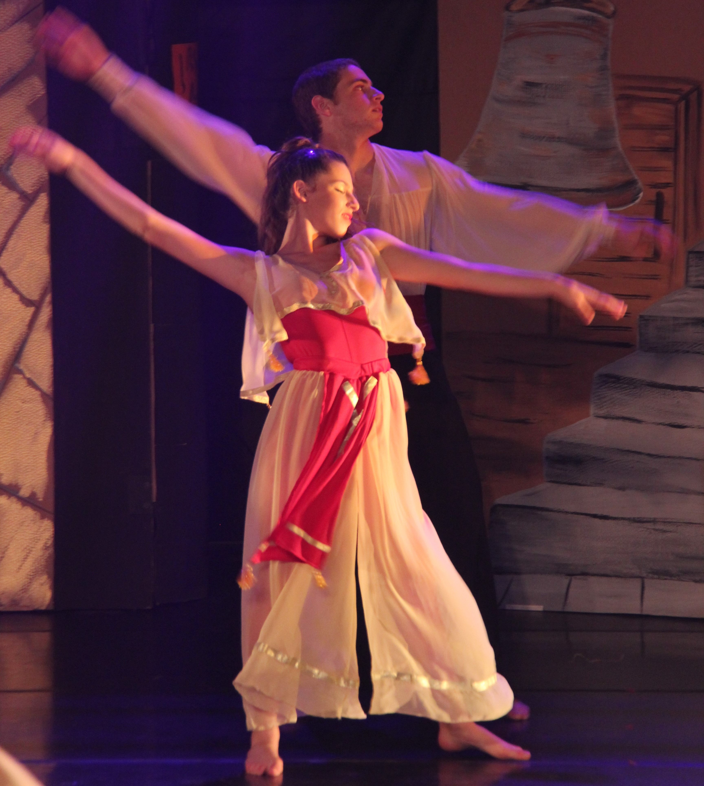
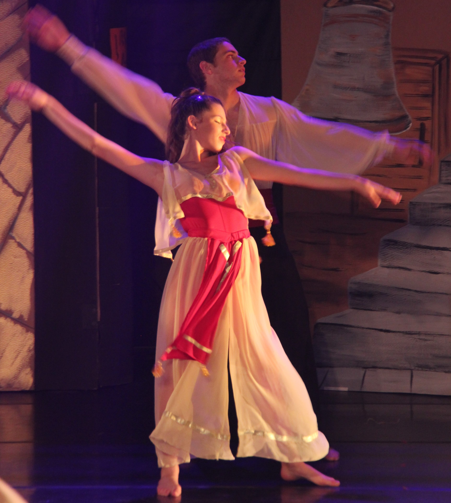

Dancing
When I was 10, I wanted to join the popular dance group in our regional council (starts in 4th grade and ends in 12th grade). After passing the group exams, I joined the group with a lot of my friends.
Couple dance was an important part of the dance group that combines modern and folklore dance. It was a mixed group of boys and girls, and besides its professional aspect, it had a large social aspect as well.
We trained three times a week for 1.5 hours each time. Throughout the years, we performed across the country, and in the last year (12th grade), we flew to Brazil to perform and meet with other groups. This part of my life was enjoyable for me - I have a lot of experience from these years with my friends in the group.
 
